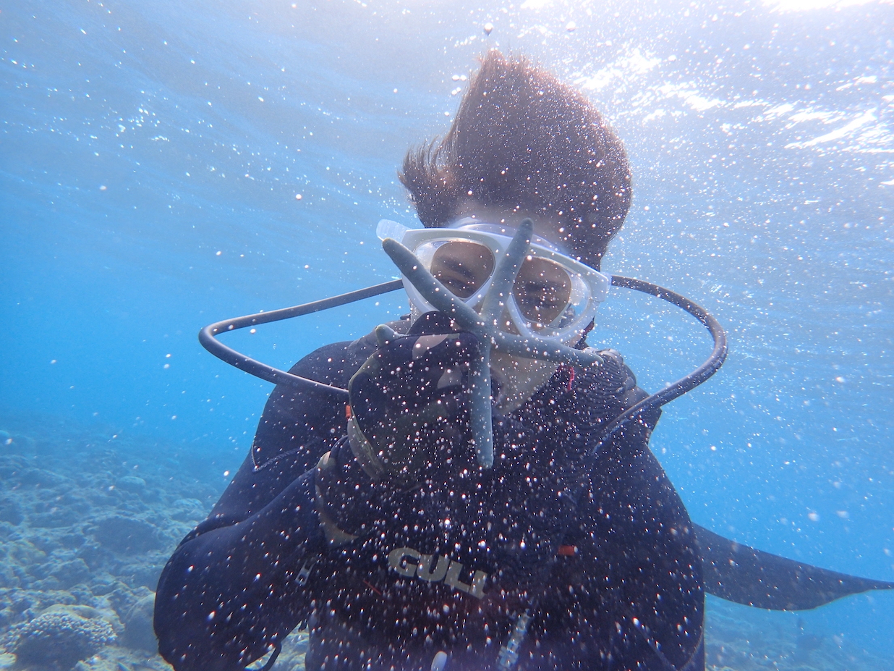

This is my experience at Okinawa. Learning to dive is an incredible experience, and most divers never forget it. Not only is it both challenging and rewarding at the same time, but it can also leave you completely breathless – and not in a bad way! When learning to dive on your PADI Open Water Diver course there are some experiences that completely take your breath away. The list can go on and on, and below I have picked out a few that are worth mentioning.
